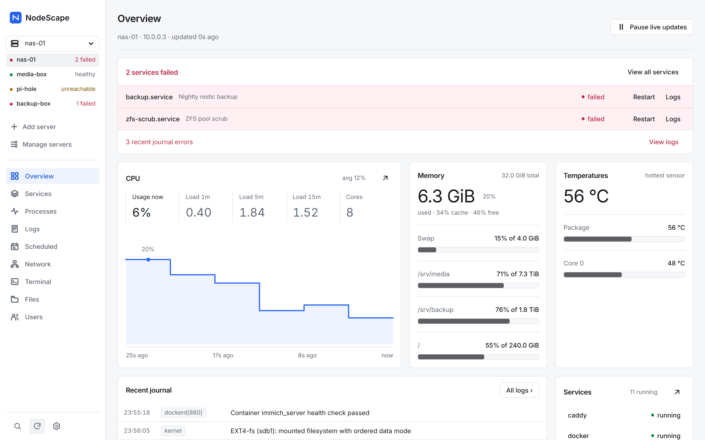
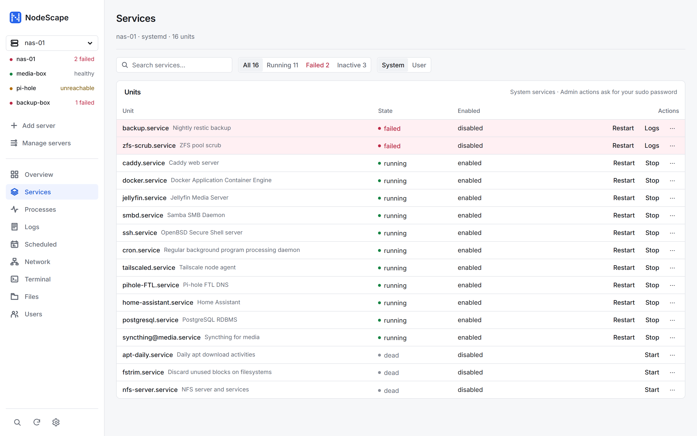
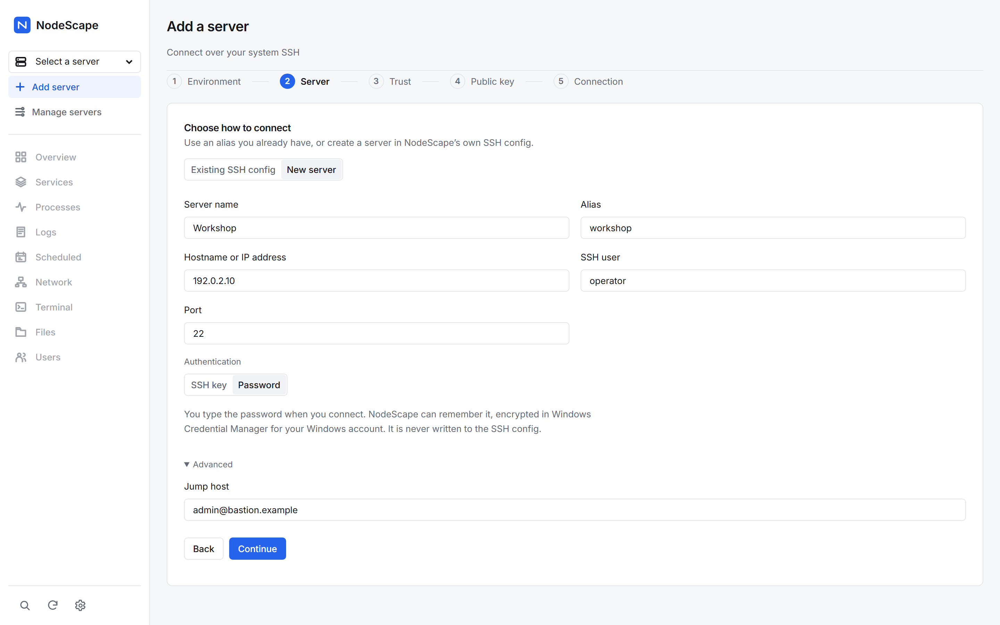
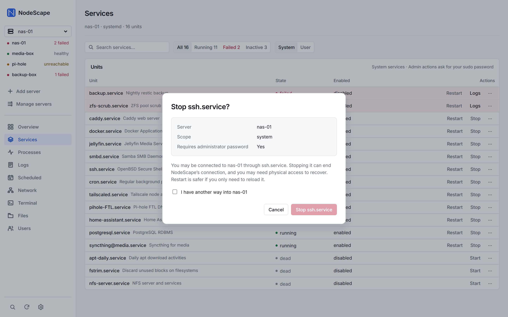
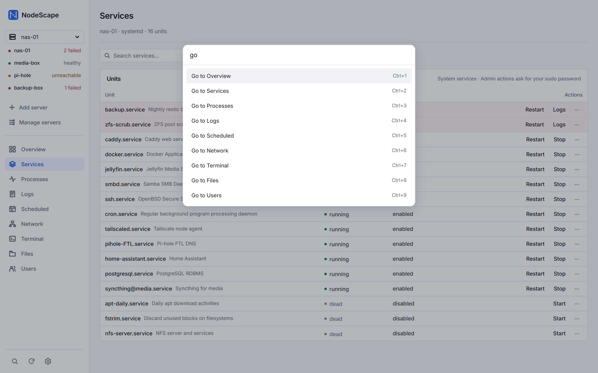
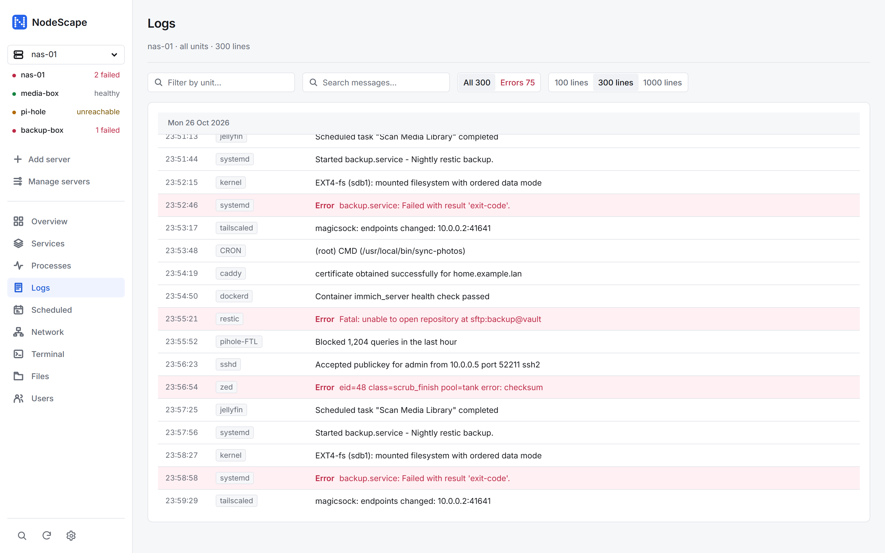
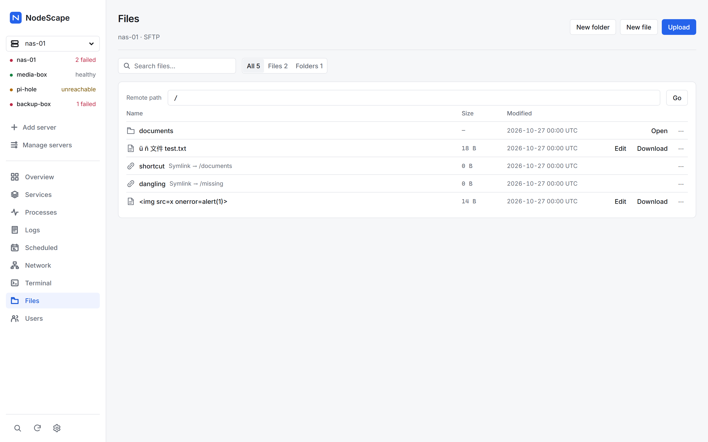

Your Linux servers, over plain SSH.

One window for the whole server
Read from standard Linux tools- Overview puts failed services and journal errors first, then CPU, memory, disks and temperatures.live
- Services lists systemd units and offers only the actions that fit each one’s state.systemd
- Logs reads the journal with day separators, an errors filter and message search.journalctl
- Processes, Scheduled, Network show what runs, what is planned and how the server is connected.read-only
- Terminal and Files give you a real terminal and an SFTP file browser with a text editor.PTY · SFTP
- Users shows accounts and groups; changes ask for administrator permission each time.admin
Loud only when something is wrong
Healthy things stay quiet. Failures get colour, a count and the action that fixes them, on every page.
- Failed units rise to the top, with Restart and Logs beside them.
- Stop, Disable and Remove are plain links; red is kept for failures.
- Every server in the sidebar shows its health, checked every two minutes.

Connect with a key or a password
Use an alias from your SSH config, or add a server by host or IP, port and user. Pick an SSH key or a password, and add one jump host if you need it.
- Passwords are typed when you connect. “Remember on this computer” keeps them encrypted in Windows Credential Manager or the macOS keychain.
- Host keys are checked strictly. First contact asks you to compare the fingerprint.
- When a connection fails you get the reason in plain words, and Show details shows the
ssh -vlog.

Admin actions that read before they run
Every change names the server, the scope and whether sudo will ask for a password. The sudo password is used once and never stored.
- Stopping ssh, Tailscale, network or firewall units warns that it can end the connection, and asks you to confirm another way in.
- Pages tell you up front whether admin actions need a password, run passwordless, or are unavailable for this account.

Built for the keyboard
Press Ctrl K for the command palette, Ctrl 1–9 for pages, and / to search (⌘ instead of Ctrl on a Mac). Arrow keys move through table rows and stay in the same column.
Live refreshes update the page in place, so focus and scroll stay where you left them.

Logs
journalctl
Files
SFTP
Security model
Details- On the server
- Nothing to install. NodeScape runs standard tools over your SSH login.
- Trust
- System OpenSSH, strict host key checking, your SSH config and agent.
- Passwords
- Sudo passwords are used once per action. Login passwords are kept only if you choose, encrypted in Windows Credential Manager or the macOS keychain.
- The app
- A strict content security policy, an allow-listed command set and no telemetry, account or cloud service.
Install
Windows · macOSDownload the installer from the latest release. On Windows you need Microsoft Edge WebView2 and the OpenSSH client, which most Windows 10 and 11 PCs already have. On macOS 11 or later, open the .dmg; the build is not signed yet, so right-click NodeScape and choose Open the first time.
Or build it from source:
npm ci
npm run build